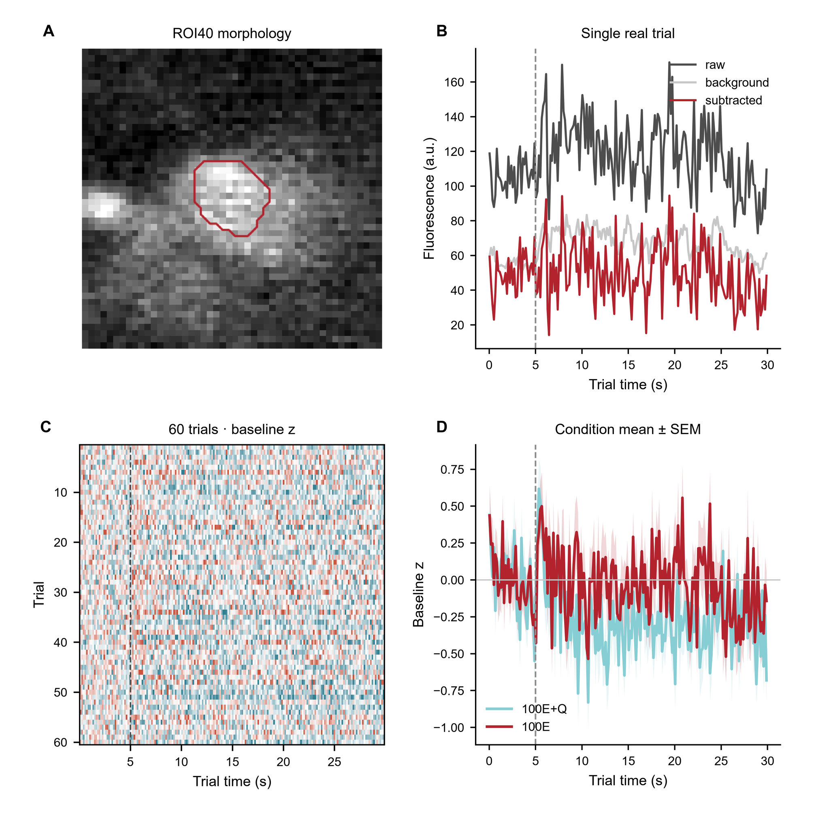

从 raw two-photon movie 到可审计的单细胞和跨天结果
这里按证据链组织，而不是按软件 stage 堆页面：先证明 registration 真的改变了真实 movie，再把每个 retained ROI 都展示出来，再展开 signal extraction 和逐 trial response，最后才进入跨天 identity 与 population result。
registration 后 median intensity frame-template correlation 提高；high-pass structural correlation 从 0.322 提高到 0.483。
ROI36–51 全部逐个显示 frozen contour；median ROI SNR=12.13。
raw、background、subtracted signal 始终和同一 ROI ID 与 trial metadata 对应。
自动匹配带有 image/geometry evidence，但在独立 consensus 前保持 review-required。
在进入 ROI 分析前，registration 必须在真实数据上显示出明确改善
原来的 raw(red)/registered(green) mean overlay 太不敏感，因为两张 mean image 本来就共享同一解剖结构。新版直接比较真实 raw movie 和 registered movie。


打开完整 registration intermediate / QC record

每个 accepted ROI 都显示，而不是只挑几个代表 cell
D6 在两个 analyzed plane 中共有 16 个 accepted ROI。页面现在把 16 个全部作为真实局部 crop 单独展示，同时保留 whole-FOV overlay 作为空间背景。


Whole-FOV ROI overlay 与 Suite2p/CaImAn 风格 intermediate checks
复杂分析之前，先按照正常 calcium-imaging 文章的顺序展示信号
先给真实连续 fluorescence trace，再给 event-aligned condition average/PSTH、single-trial heatmap、代表性 cell、all-cell heatmap 和 population summary；extraction robustness、cross-day identity、decoding 等全部放在后面。
不能停在一个漂亮 example cell
同一 D6 authority 从 behavior、trial、single cell 一直展开到 16-cell population，100E / 100E+Q 两种条件始终保持可见。
每个 ROI 始终连接到 raw signal、background、trial structure 和 condition response
extraction layer 不直接跳到一个 coefficient；在 cell-level model 总结前，真实 raw/background/subtracted trace 和完整 trial matrix 都保留可见。

sub1.Signal-source sensitivity 与 cell-level model

same-cell identity 由 local image evidence 和独立 review 支撑
cross-day matching 不会仅因为 centroid 靠得近就直接 freeze。candidate edge 保留 spatial distance 与 local image correlation，在独立 consensus 前保持 review-required。

population summary 保留底层 cell 与 trial 的 heterogeneity
同一批 60 个 behavioral trial 始终连接到 60×16 neural response matrix、代表性 cell response 和完整 per-cell sustained-effect distribution。

Stage00→10 executable contract 仍然保留，但不再占据主科学页面
cold-start 与 cross-day synthetic regression 用于测试 software path。它们验证执行正确性，不再当作 biological evidence。
Stage00→10 executable state machine
Cold-start 与 cross-day regression gates
The two-session regression additionally tests non-contiguous ROI IDs, Stage07/08 matching, two independent reviewers, one-to-one integrity, downstream invalidation and release refreeze. Regression record.